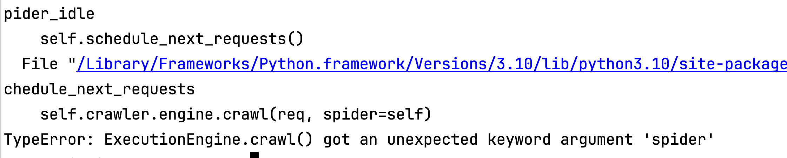
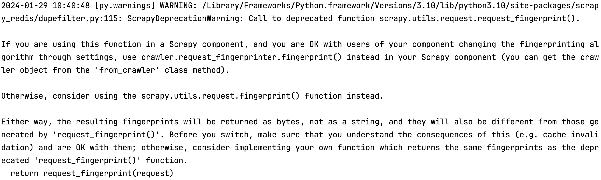
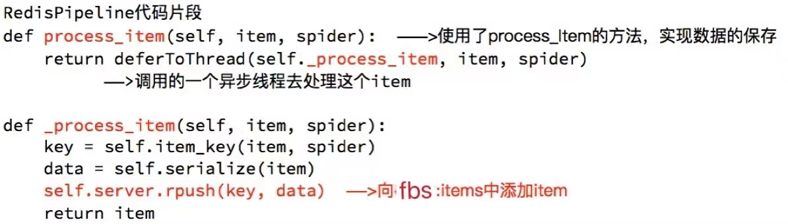
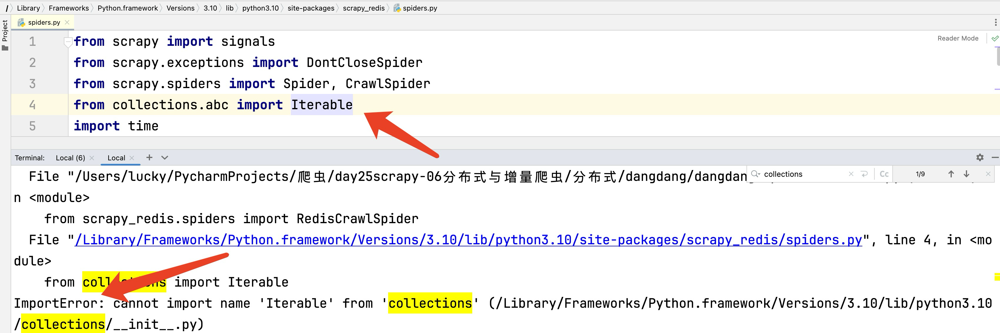
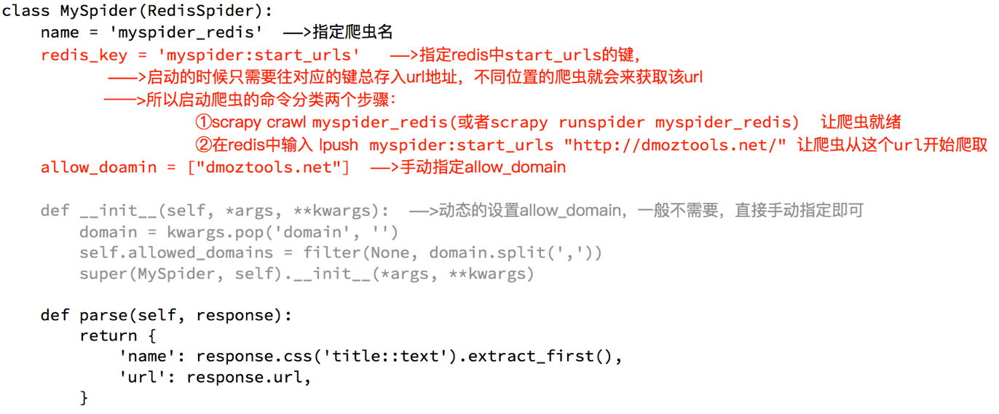

十六、scrapy_redis
一、scrapy_redis分布式原理
学习目标
- 了解 scarpy_redis的概念和功能
- 了解 scrapy_redis的原理
- 了解 redis数据库操作命令
在前面scrapy框架中我们已经能够使用框架实现爬虫爬取网站数据,如果当前网站的数据比较庞大, 我们就需要使用分布式来更快的爬取数据
1、scrapy_redis是什么
分布式爬取/抓取
您可以启动共享单个 Redis 队列的多个蜘蛛实例。最适合广泛的多域爬网。
2、安装
方式一
pip install scrapy_redis == 0.7.3
不建议，因为当前方式需要先将URL扔进redis队列中，否则先运行scrapy会抛出如下异常

先执行url扔进队列，在运行scrapy，程序会正常执行，但是也会抛出如下警告（所以建议使用第二章方式进行安装）

方式二（建议）
运行无论是否先将URL扔进队列中都可以正常运行
下载scrapy安装包，使用命令进行安装
下载地址：https://github.com/rmax/scrapy-redis#features
文档： https://readthedocs.org/projects/scrapy-redis/downloads/pdf/stable/
安装：
cd scrapy-redis-master（git上下载下来的安装包）
python setup.py install
要求
- Python 3.7+
- Redis >= 5.0
Scrapy>= 2.0redis-py>= 4.0
3、为什么要学习scrapy_redis
Scrapy_redis在scrapy的基础上实现了更多，更强大的功能，具体体现在：
- 请求对象的持久化
- 去重的持久化
- 和实现分布式
4、scrapy_redis的原理分析
4.1 回顾scrapy的流程

那么，在这个基础上，如果需要实现分布式，即多台服务器同时完成一个爬虫，需要怎么做呢？
4.2 scrapy_redis的流程
- 在scrapy_redis中，所有的带抓取的对象和去重的指纹都存在所有的服务器公用的redis中
- 所有的服务器公用一个redis中的request对象
- 所有的request对象存入redis前，都会在同一个redis中进行判断，之前是否已经存入过
- 在默认情况下所有的数据会保存在redis中
具体流程如下：

5、对于redis的复习
由于时间关系,大家对redis的命令遗忘的差不多了, 但是在scrapy_redis中需要使用redis的操作命令,所有需要回顾下redis的命令操作
5.1 redis是什么
redis是一个开源的内存型数据库，支持多种数据类型和结构，比如列表、集合、有序集合等,同时可以使用redis-manger-desktop等客户端软件查看redis中的数据，关于redis-manger-desktop的使用可以参考扩展阅读
5.2 redis服务端和客户端的启动
redis-server.exe redis-windwos.conf启动服务端redis-cli客户端启动
5.3 redis中的常见命令
select 1切换dbkeys *查看所有的键type 键查看键的类型flushdb清空dbflushall清空数据库
5.4 redis命令的复习
redis的命令很多，这里我们简单复习后续会使用的命令

小结
scarpy_redis的分布式工作原理 - 在scrapy_redis中，所有的带抓取的对象和去重的指纹都存在所有的服务器公用的redis中 - 所有的服务器公用一个redis中的request对象 - 所有的request对象存入redis前，都会在同一个redis中进行判断，之前是否已经存入过
二、配置分布式爬虫
学习目标
配置完成使用分布式爬虫
1、概述
分布式爬虫
- 使用多台机器搭建一个分布式的机器，然后让他们联合且分布的对同一组资源进行数据爬取
- 原生的scrapy框架是无法实现分布式爬虫？
- 原因：调度器，管道无法被分布式机群共享
- 如何实现分布式
- 借助：scrapy-redis组件
- 作用：提供了可以被共享的管道和调度器
- 只可以将爬取到的数据存储到redis中
2、创建分布式crawlspider爬虫
- scrapy startproject fbsPro
- cd fbsPro
- scrapy genspider -t crawl fbs www.xxx.com
3、redis-settings需要的配置
- (必须). 使用了scrapy_redis的去重组件，在redis数据库里做去重
python
DUPEFILTER_CLASS = "scrapy_redis.dupefilter.RFPDupeFilter"
- (必须). 使用了scrapy_redis的调度器，在redis里分配请求
python
SCHEDULER = "scrapy_redis.scheduler.Scheduler"
- (可选). 在redis中保持scrapy-redis用到的各个队列，从而允许暂停和暂停后恢复，也就是不清理redis queues
python
SCHEDULER_PERSIST = True
- (必须). 通过配置RedisPipeline将item写入key为 spider.name : items 的redis的list中，供后面的分布式处理item 这个已经由 scrapy-redis 实现，不需要我们写代码，直接使用即可
python
ITEM_PIPELINES = {
'scrapy_redis.pipelines.RedisPipeline': 100 ,
}
- (必须). 指定redis数据库的连接参数
python
REDIS_HOST = '127.0.0.1'
REDIS_PORT = 6379
# 设置密码
REDIS_PARAMS = {'password': '123456'}
4、settings.py
settings.py
这几行表示scrapy_redis中重新实现的了去重的类，以及调度器，并且使用的RedisPipeline
需要添加redis的地址，程序才能够使用redis
在settings.py文件修改pipelines，增加scrapy_redis。
# 配置分布式
DUPEFILTER_CLASS = "scrapy_redis.dupefilter.RFPDupeFilter"
SCHEDULER = "scrapy_redis.scheduler.Scheduler"
SCHEDULER_PERSIST = True
ITEM_PIPELINES = {
'scrapy_redis.pipelines.RedisPipeline': 400,
}
# REDIS_URL = "redis://127.0.0.1:6379"
# 或者使用下面的方式
REDIS_HOST = "127.0.0.1"
REDIS_PORT = 6379
REDIS_PARAMS = {'password': '123456'}
注意：scrapy_redis的优先级要调高
三、配置scrapy爬虫
1、配置正常抓取代码
import scrapy
from scrapy_redis.spiders import RedisSpider
class FbsSpider(RedisSpider):
name = "fbs"
# allowed_domains = ["duanzixing.com"]
# start_urls = ["https://duanzixing.com"]
redis_key = 'fbsQueue' # 使用管道名称（课根据实际功能起名称）
def parse(self, response, **kwargs):
article_list = response.xpath('//article[@class="excerpt"]')
for article in article_list:
title = article.xpath('./imgs/header/h2/a/text()').extract_first()
con = article.xpath('./imgs/p[@class="note"]/text()').extract_first()
data = {'title': title, 'con': con}
print(data)
yield data
2、配置RedisCrawlSpider
import scrapy
from scrapy.linkextractors import LinkExtractor
from scrapy.spiders import CrawlSpider, Rule
from scrapy_redis.spiders import RedisCrawlSpider
# 注意 一定要继承RedisCrawlSpider
class FbsSpider(RedisCrawlSpider):
name = 'fbs'
# allowed_domains = ['www.xxx.com']
# start_urls = ['http://www.xxx.com/']
redis_key = 'fbsQueue' # 使用管道名称
link = LinkExtractor(allow=r'/political/politics/index?id=\d+')
rules = (
Rule(link, callback='parse_item', follow=True),
)
def parse_item(self, response):
item = {}
yield item
3、scrapy-redis键名介绍
scrapy-redis中都是用key-value形式存储数据，其中有几个常见的key-value形式：
1、 “项目名:items” -->list 类型，保存爬虫获取到的数据item 内容是 json 字符串
2、 “项目名:dupefilter” -->set类型，用于爬虫访问的URL去重 内容是 40个字符的 url 的hash字符串
3、 “项目名: start_urls” -->List 类型，用于获取spider启动时爬取的第一个url
4、 “项目名:requests” -->zset类型，用于scheduler调度处理 requests 内容是 request 对象的序列化 字符串 当前在redis中可能看到，也可能看不到，因为如果数据全部抓取完当前key便不存在
4、注意
-
redis中
-
redis-windwos.conf （如果当前配置文件中的已经被注释或者不存在，则不用处理）
- 56行添加注释 取消绑定127.0.0.1 # bind 127.0.0.1
- 75行 修改保护模式为no protected-mode no
-
启动redis
-
队列中添加url地址
添加：lpush fbsQueue https://wz.sun0769.com/political/index/politicsNewest
查看：lrange fbsQueue 0 -1
-
进入到路径中
cd fbsPro/fbsPro/spiders
- 启动分布式爬虫
scrapy runspider fbs.py
- 去redis中查看存储的数据
四、scrapy_redis 爬虫 分析
学习目标
- 了解 scrapy_redis实现去重的原理
- 了解 scrapy中请求入队的条件
- 能够应用 scrapy_redis完成基于url地址的增量式爬虫
1、运行查看redis
- 我们执行分布式爬虫，会发现redis中多了一下三个键：

- 继续执行程序
继续执行程序，会发现程序在前一次的基础之上继续往后执行，所以分布式爬虫是一个基于url地址的增量式的爬虫
2、scrapy_redis的原理分析
我们从settings.py中的三个配置来进行分析 分别是：
- RedisPipeline
- RFPDupeFilter
- Scheduler
2.1 Scrapy_redis之RedisPipeline
RedisPipeline中观察process_item，进行数据的保存，存入了redis中

2.2 Scrapy_redis之RFPDupeFilter
RFPDupeFilter 实现了对request对象的加密

2.3 Scrapy_redis之Scheduler
scrapy_redis调度器的实现了决定什么时候把request对象加入带抓取的队列，同时把请求过的request对象过滤掉

由此可以总结出request对象入队的条件
- request之前没有见过
- request的dont_filter为True，即不过滤
- start_urls中的url地址会入队，因为他们默认是不过滤
3、报错
如果您的解释器为3.10及以上，运行出现如下错误
ImportError: cannot import name 'Iterable' from 'collections' (/Library/Frameworks/Python.framework/Versions/3.10/lib/python3.10/collections/__init__.py)
原因：
3.10及以上杜对于from collections import Iterable 导包路径更改为from collections.abc import Iterable
去到当前导包报错路径文件中更改即可

总结
- 本小结重点
- 知道什么是scrapy_redis
- 掌握scarpy_redis实现分布式的原理
- 掌握scrapy_进行url地址加密的方法
- 掌握request对象入队的条件
- 能够通过scrapy_redis完成基于url地址的增量式爬虫
五、案例
学习目标
- 能够应用 scrapy_redis实现分布式爬虫
- 能够应用 scrapy_redis中RedisCrawlspider类实现分布式爬虫
1 RedisSpider
1.1 分析demo中代码
通过观察代码：
- 继承自父类为RedisSpider
- 增加了一个redis_key的键，没有start_urls，因为分布式中，如果每台电脑都请求一次start_url就会重复
- 多了
__init__方法，该方 法不是必须的，可以手动指定allow_domains

1.2 动手实现当当图书爬虫
需求：抓取当当图书的信息
目标：抓取当当图书又有图书的名字、封面图片地址、图书url地址、作者、出版社、出版时间、价格、图书所属大分类、图书所属小的分类、分类的url地址
url：http://book.dangdang.com
2 RedisCrawlSpider
2.1 代码
import scrapy
from scrapy.linkextractors import LinkExtractor
from scrapy.spiders import CrawlSpider, Rule
from scrapy_redis.spiders import RedisCrawlSpider
'''
当当网 分布式抓取 crawlspider
redis终端输入
lpush dangdang http://category.dangdang.com/cp01.01.02.00.00.00.html
启动scrapy
'''
# class DdcrawlSpider(CrawlSpider):
class DdcrawlSpider(RedisCrawlSpider):
name = 'ddcrawl'
# allowed_domains = ['category.dangdang.com/cp01.01.02.00.00.00.html']
# start_urls = ['http://category.dangdang.com/cp01.01.02.00.00.00.html/']
redis_key = 'dangdang' # 使用管道名称（课根据实际功能起名称）
"""
url
http://category.dangdang.com/cp01.01.02.00.00.00.html
http://category.dangdang.com/pg2-cp01.01.02.00.00.00.html
http://category.dangdang.com/pg100-cp01.01.02.00.00.00.html
"""
rules = (
Rule(LinkExtractor(allow=r'cp01\.01\.02\.00\.00\.00\.html$'),callback='parse_item', follow=False),
)
def parse_item(self, response):
con_shoplist = response.xpath('//div[@class="con shoplist"]/div/ul/li')
print(con_shoplist)
for li in con_shoplist:
item = {}
# 获取图片src
img = li.xpath('./imgs/a/img/@src').extract_first()
# 获取标题
title = li.xpath('./imgs/p[@name="title"]/a/text()').extract_first()
# 获取详情
detail = li.xpath('./imgs/p[@class="detail"]/text()').extract_first()
# 获取价格
price = li.xpath('./imgs/p[@class="price"]/span/text()').extract_first()
item['img'] = img
item['title'] = title
item['detail'] = detail
item['price'] = price
print(response.request.url, item)
yield item